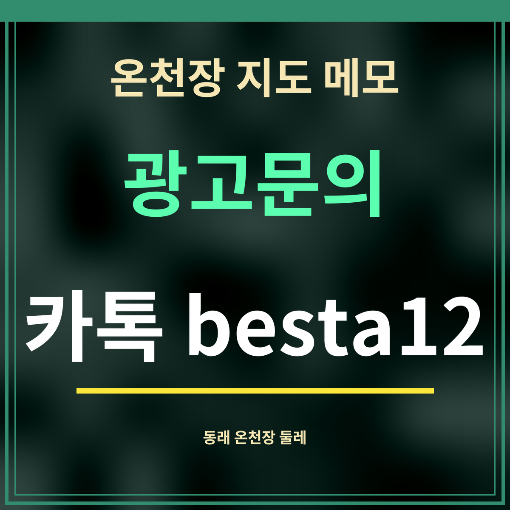

온천장 지도 메모

부산 동래구 온천장로107번길 32 둘레를 지도에 점 찍듯 적은 메모입니다. 먹을 곳, 쉴 곳, 산책할 곳과 전기차 충전소까지 2026년 9월 28일 카카오맵 공개 정보로 확인했고, 거리는 좌표로 잰 직선거리입니다.
전기차 충전할 곳
| 충전소 | 주소 | 거리 |
|---|---|---|
| 부산 동래구 르메이에르 동래타운 | 금강공원로20번길 46 | 103m |
| 부산농심호텔 | 금강공원로20번길 24 | 121m |
| 농심호텔 수퍼차저(DC콤보) (테슬라전용) | 금강공원로20번길 23 | 138m |
| 부산동래 온천동종합금융센터 | 온천장로125번길 7 | 240m |
호텔이나 아파트 건물에 딸린 충전기는 손님·주민만 쓰게 할 수 있으니 먼저 물어보세요. 이름에 테슬라 전용이 붙은 충전기는 다른 차가 쓸 수 없습니다.
부산아시아드나이트 메모 모음
- 부산아시아드나이트 금요일과 토요일 비교
- 부산아시아드나이트 월~목 저녁 비교
- 부산아시아드나이트 문 연 직후 7~8시
- 부산아시아드나이트 새벽 0~4시
- 부산아시아드나이트 같은 주소 카페
- 부산아시아드나이트 근처 해장국
- 부산아시아드나이트 가기 전 식사
- 부산아시아드나이트 근처 숙소
- 부산아시아드나이트 금강공원 산책
- 부산아시아드나이트 노천족욕탕
메모 보는 순서
먼저 요일별 흐름을 보고 날을 정한 다음, 먹을 곳과 기다릴 곳을 붙이고, 끝으로 쉴 곳이나 걸을 곳을 고르는 순서를 권합니다. 값은 확인한 날 기준이라 바뀔 수 있어 나서기 전에 지도에서 다시 보세요.
가게 앞 가까운 곳
| 곳 | 거리 |
|---|---|
| CU 온천아시아드점(편의점) | 31m |
| 스타벅스 동래허심청점(카페) | 43m |
| 호텔농심(숙소) | 64m |
| 남포해장국 | 91m |
| 동래온천노천족욕탕 | 126m |
다섯 곳 모두 온천장로107번길 32에서 직선 130m 안입니다. 물·커피·잠자리·해장·족욕을 한 동네에서 해결할 수 있다는 뜻입니다. 이용 시간은 곳마다 다르니 지도에서 확인하세요.
자주 묻는 것
기준점은 어디인가요?
부산 동래구 온천장로107번길 32입니다.
부산 동래구 온천장로107번길 32입니다.
충전소는 누구나 쓰나요?
건물 안 충전소와 테슬라 전용 충전기는 이용 조건이 있어 확인이 필요합니다.
건물 안 충전소와 테슬라 전용 충전기는 이용 조건이 있어 확인이 필요합니다.
언제 조사했나요?
카카오맵을 9월 28일 새벽에 열어 옮겨 적었습니다.
카카오맵을 9월 28일 새벽에 열어 옮겨 적었습니다.
한 줄 정리: 온천장로107번길 32 둘레의 쓸모 있는 곳을 가까운 순서로 적은 지도 메모입니다.